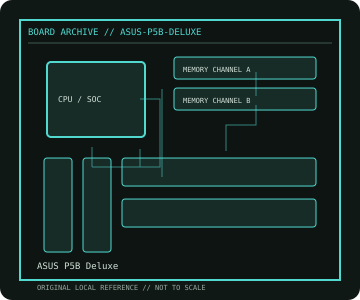

[ INDIVIDUAL COMPONENT // MOTHERBOARDS ]
ASUS P5B Deluxe
Intel Core 2 enthusiast ATX platform, 2006. This record documents the named model and its documented variants; confirm the PCB revision, submodel and firmware on the physical unit.

REVISION WARNING: Similar model names and PCB revisions may have different processors, connectors or firmware. Read the silkscreen and assembly code; use the support files for that exact board variant.
Specifications
| Catalog subcategory | Legacy Intel desktop platforms |
|---|---|
| Exact model / era | ASUS P5B Deluxe — Intel Core 2 enthusiast ATX platform, 2006 |
| CPU and socket / SoC | LGA775 Core 2 Duo/Quad/Extreme, Pentium D/4 and Celeron families per ASUS CPU support list |
| Chipset / platform | Intel P965 Express with ICH8R |
| Memory | Four DDR2 DIMM slots, dual channel; board documentation specifies up to 8 GB |
| Slots and connectivity | ATX; two PCIe x16-length graphics slots with lane sharing, one PCIe x1 and three PCI; six SATA 3 Gb/s, dual Gigabit Ethernet, IEEE 1394 and rear eSATA |
| Firmware | ASUS Award BIOS; CPU stepping support and recovery procedures depend on the installed BIOS. Use P5B Deluxe files, not P5B-E or P5B-V firmware. |
Compatibility and revision notes
Board and revision must match ASUS' CPU table. DDR2 only; PCIe slot bandwidth is not x16/x16 with both graphics slots populated.
Socket, connector shape and family branding alone do not establish compatibility. Verify the exact processor list, minimum BIOS, memory population table, power input, dimensions, and shared-lane behavior in the cited manual before installation.
Preservation and repair
Inspect LGA775 contacts, P965/ICH heatsink mounting, and electrolytic capacitors around the VRM. Record the BIOS version and RAID mode before battery replacement; use the manual's EZ Flash/recovery instructions.
For archival preservation, photograph the PCB, labels, connectors and included accessories before cleaning. Record serial/date codes, firmware versions, known faults, prior repairs and test conditions; use ESD-safe handling and do not power a board with loose conductive hardware beneath it.
Sources & further reading
- ASUS P5B Deluxe — product/manual referenceModel-specific platform, board layout and interface reference.
- ASUS P5B Deluxe — support and firmware resourcesSupport documentation; match the PCB revision, CPU support list and firmware release to the physical board.
Manufacturer/model documentation is the primary reference. Where vendor support is archived, match its revision notes to the board and do not cross-flash firmware from a similar product.